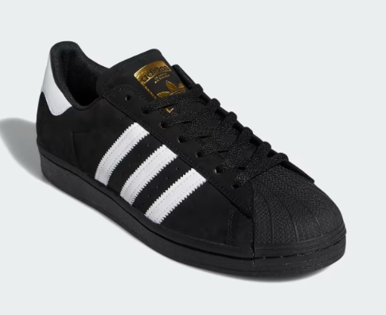

O verdadeiro original está de volta. Nascido nas quadras de basquete, ele ganhou os holofotes como parte da cena de hip hop dos anos 80. Porém, ele não parou por aí. O Superstar também foi o primeiro tênis adidas a ser adotado pela comunidade do skate. Esta versão mantém-se fiel ao icônico estilo shell-toe, que continua no auge há cinco décadas, sem previsão de ficar para trás. O cabedal em couro premium, o cupsole volumoso e os detalhes dourados são itens à altura de uma estrela do skate como você.
Comprar R$ 500,00